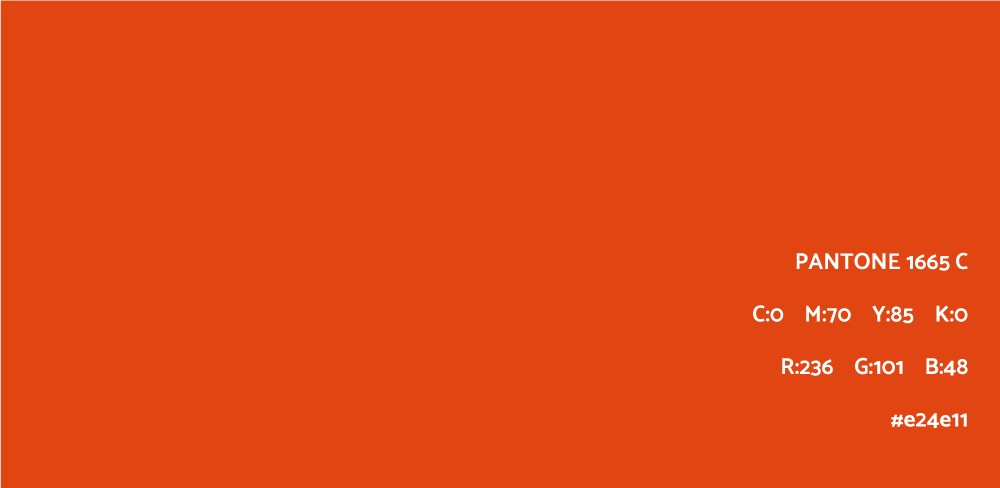
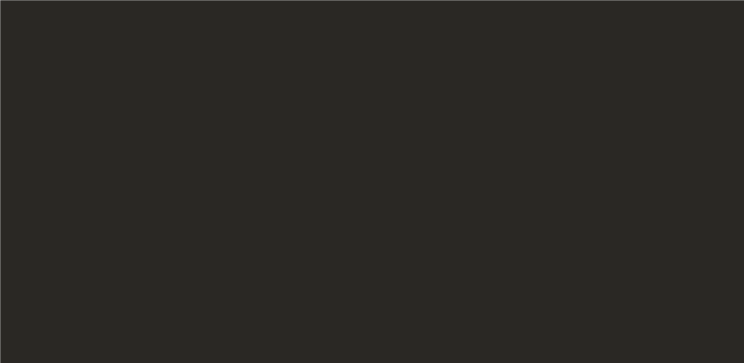
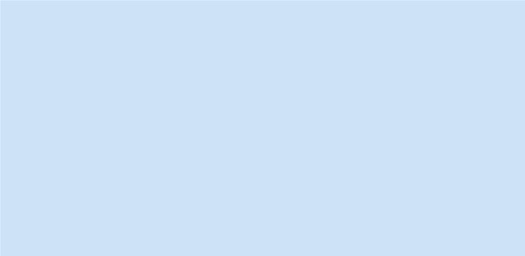
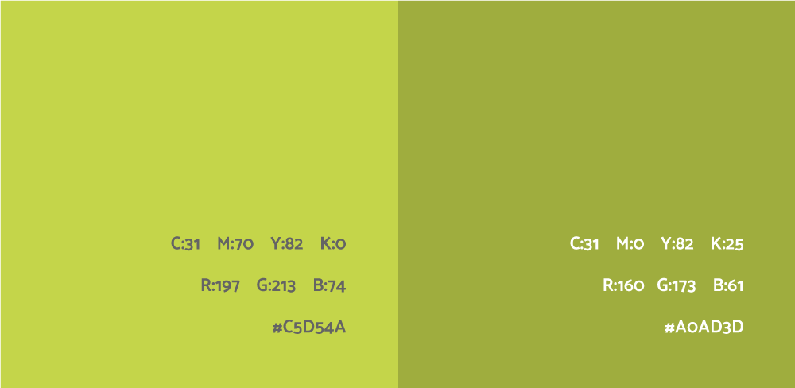
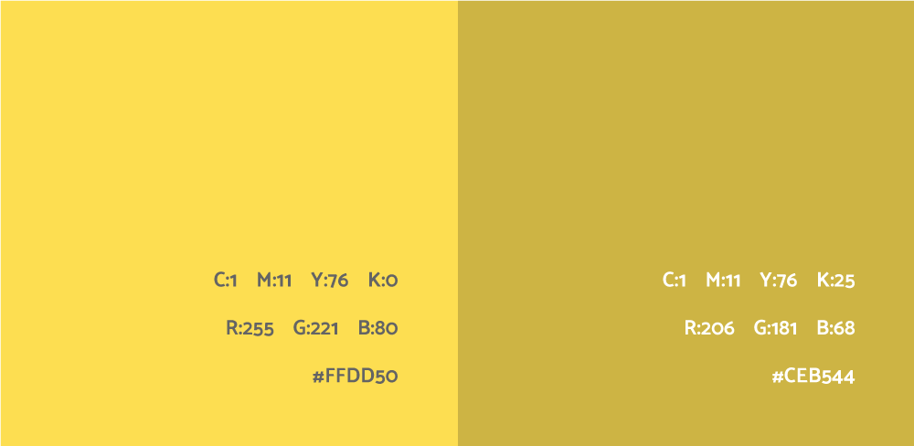
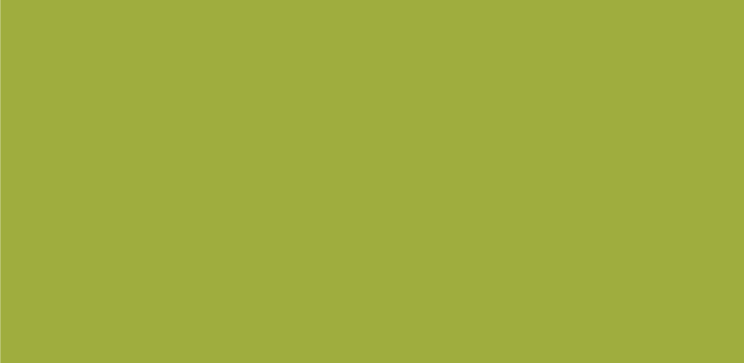
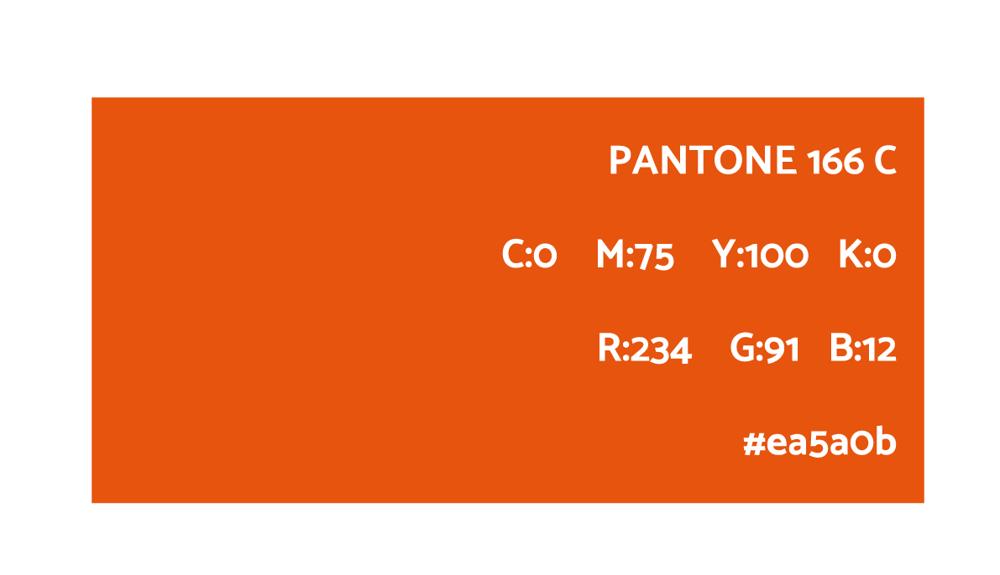
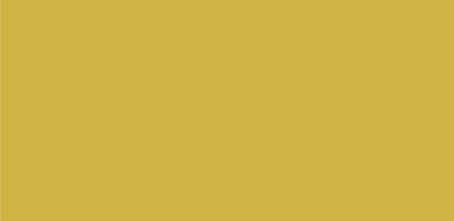
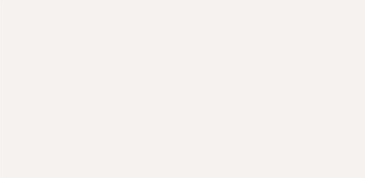

Primaire kleur
Kleur is een belangrijk onderdeel van een huisstijl. De kleur die gebruikt is in deze huisstijl is een kleur die opgelegd is door Stad Gent.
Oranje

CMYK: 0 75 100 0
RGB: 234 91 12
HEX: #ea5a0b
PMS: PANTONE 166 C
Secundaire kleur
Het secundaire kleur is een kleur dat we in combinatie gebruiken met het primaire kleur. Het zorg voor een contrast bij het logo. Als men het logo wilt gebruiken op een primair-gekleurde achtergrond dan worden de oranje tinten in het logo aangepast naar de secundaire oranje kleur.
Donker Oranje
Donker Grijs

CMYK: 0 70 85 0
RGB: 236 101 48
HEX: #e24e11
PMS: PANTONE 1665 C
CMYK: 68 62 62 75
RGB: 42 39 36
HEX: #2A2724
PMS: PANTONE Black C
Tertaire kleuren
De tertaire kleuren zijn de kleuren die elders in de huisstijl te vinden zijn. Ze worden gebruikt bij verschillende onderdelen.
Licht Blauw
Donker Blauw

CMYK: 23 5 0 0
RGB: 204 226 246
HEX: #CCE2F6
CMYK: 23 5 0 25
RGB: 166 185 201
HEX: #A6B9C9
Licht Groen
Donker Groen

CMYK: 31 70 82 0
RGB: 197 213 74
HEX: #C5D54A
CMYK: 31 70 82 25
RGB: 234 91 12
HEX: #ea5a0b
Licht Geel
Donker Geel

CMYK: 1 11 76 0
RGB: 255 221 80
HEX: #FFDD50
CMYK: 1 11 76 25
RGB: 234 91 12
HEX: #CEB544
Licht Grijs
Grijs
CMYK: 5 4 5 0
RGB: 245 243 242
HEX: #F5F3F2
CMYK: 11 7 8 0
RGB: 23E2 233 233
HEX: #E8E9E9